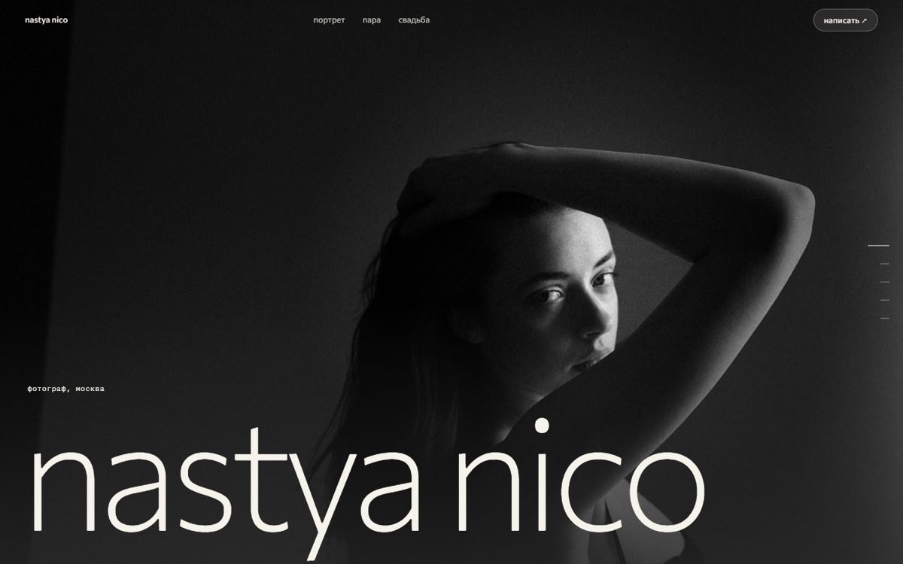
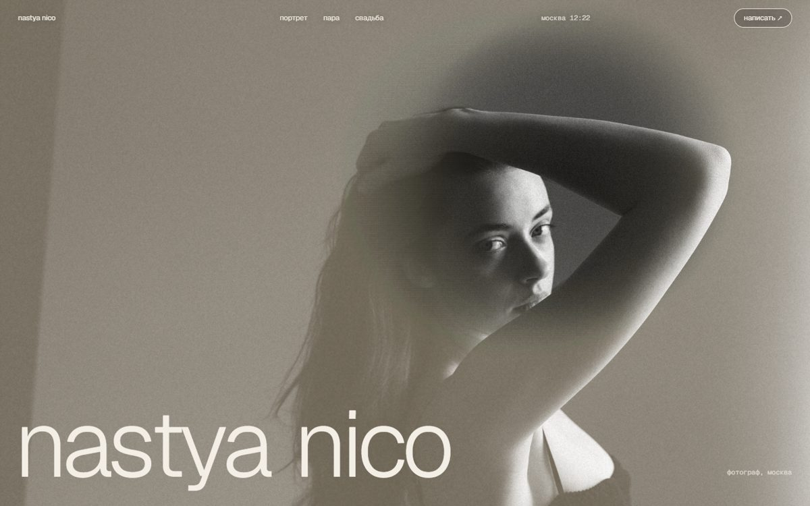
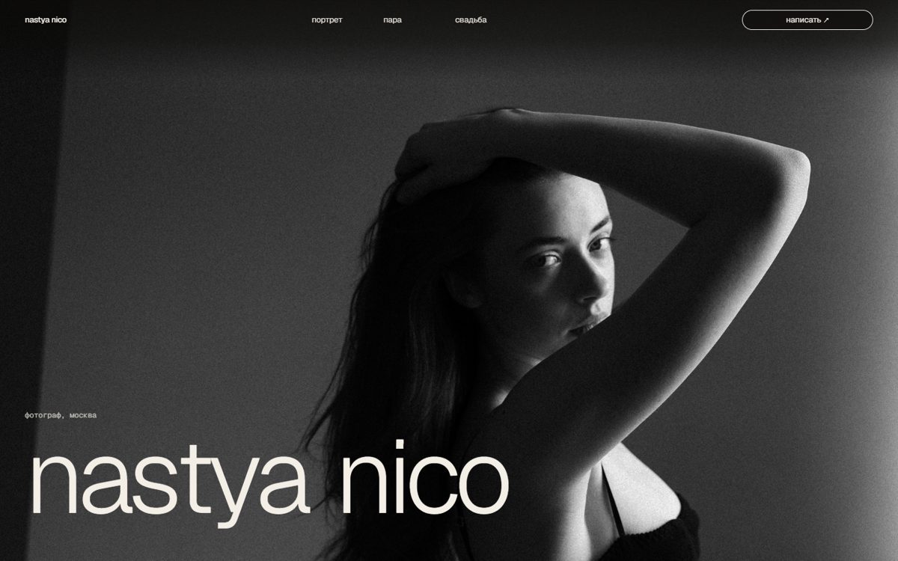

Привет) Это живые черновики, их лучше листать и трогать: водить мышкой или пальцем по первому экрану и медленно прокручивать вниз. Кадры твои, тексты из твоего канала, даты и места подставим вместе с тобой.

Тихий. Над портретом ходит круг света, как рука над увеличителем. Следующий кадр мягко проступает сквозь предыдущий, будто их проявляют по очереди.

Плёночный. Портрет лежит под тёплой дымкой, под пальцем она расходится. Кадры растворяются друг в друга через дымку и зерно, в шапке идут московские часы.

Шрифт из B, спокойные раскладки из A. Кадры во всю ширину, экраны просто пролистываются один за другим, без эффектов.